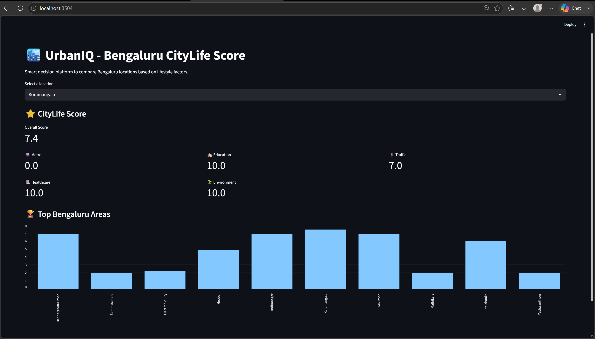

I build reliable APIs and practical AI-powered applications using Python, FastAPI, SQL and modern backend technologies.
Currently: Backend AI Engineering Intern at FlyRank AI
View Projects Download ResumeI am currently pursuing B.Tech in Information Technology at Garden City University, Bengaluru.
I am currently working as a Backend AI Engineering Intern at FlyRank AI, where I am learning and working with FastAPI, SQLModel, SQLite, REST APIs, Git, GitHub, Docker and PostgreSQL.
I have a strong interest in Backend Development, Artificial Intelligence and Data Analytics. I enjoy learning new technologies and building practical projects to solve real-world problems.
UrbanIQ is a data-driven platform I built to help users compare Bengaluru locations based on lifestyle factors such as transportation, healthcare, education, environment and traffic. I cleaned and analyzed Bengaluru housing data, created CityLife scoring metrics and built an interactive dashboard to compare locations.

Technologies: Python · Pandas · Streamlit · SQLite
An AI-powered system I built to analyze user complaints and support automated complaint classification and resolution. The project uses AI techniques to process complaint text and help organize support requests for faster handling.
Technologies: Python · Artificial Intelligence · FastAPI · REST APIs
I built a REST API for managing tasks with FastAPI, SQLModel and SQLite. I implemented CRUD operations, database models and API endpoints for creating, viewing, updating and deleting tasks.
Technologies: Python · FastAPI · SQLModel · SQLite · REST API
I built a containerized FastAPI application using Docker, PostgreSQL and Docker Compose. I configured the backend and PostgreSQL database as separate services and connected the application to the database for reliable backend development.
Technologies: FastAPI · PostgreSQL · Docker · Docker Compose
This section will be updated with future AI projects, technical posts and my FlyRank AI capstone project.
Currently learning and working on backend and AI engineering tasks involving FastAPI, SQLModel, SQLite, REST APIs, authentication, Git, GitHub, Docker and PostgreSQL.
Email: sanju17reddys@gmail.com
GitHub: github.com/sanjureddy17
LinkedIn: LinkedIn Profile
Booking: Book a Meeting